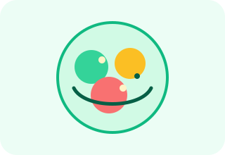

Алина Смирнова
★★★★★
«Очень удобно собирать рацион со смартфона по дороге с тренировки. Нижняя навигация и быстрый подсчёт КБЖУ экономят массу времени!»
Мобильно-ориентированное веб-приложение из 3 отдельных страниц, сверстанное по стратегии Mobile First с использованием CSS Flexbox и относительных единиц измерения (%, vw, vh, rem, em).

Реальные отзывы пользователей и ответы на частые вопросы о работе приложения.
«Очень удобно собирать рацион со смартфона по дороге с тренировки. Нижняя навигация и быстрый подсчёт КБЖУ экономят массу времени!»
«На большом мониторе ноутбука сайт автоматически перестраивается в удобную трёхколоночную панель. Доставка всегда вовремя.»
«Попробовала программу Детокс — все макронутриенты прозрачно расписаны, порции свежие и сытные.»
index.html (Главная и подбор калорийности), catalog.html (Каталог блюд с фильтрацией) и tracker.html (Трекер КБЖУ и корзина). Выбранные блюда и цель калорий автоматически сохраняются между страницами.
@media (min-width: 768px)) и десктопов (@media (min-width: 1024px)) сетка расширяется в несколько колонок.